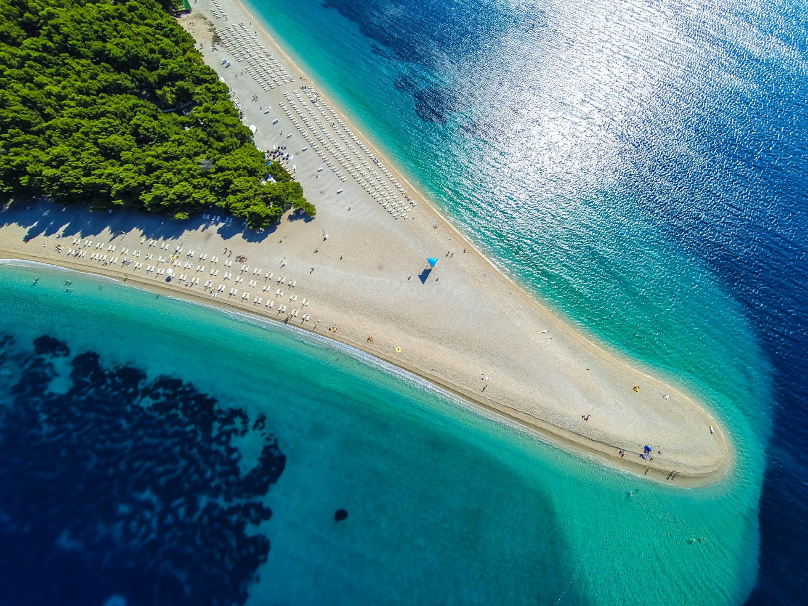

Kroatien
Insel Brač

Brač ist die grösste Insel in der Region Dalmatien. Die Insel ist vor allem durch den Strand Zlatni rat bekannt, was so viel wie goldenes Horn heisst und welcher wie ein Spitz geformt ist. Kroatien hat eine sehr grosse Küste und zieht jedes Jahr viele Touristen an.